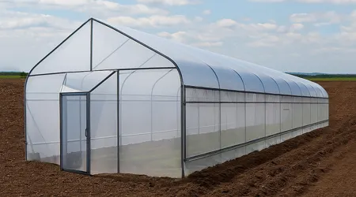

¿QUÉ ES EL INVERNADERO?
Un invernadero es una estructura cubierta con materiales transparentes (vidrio, plástico) que crea un microclima controlado para cultivar plantas, protegiéndolas del clima exterior (frío, lluvia, viento) y permitiendo regular factores como temperatura, humedad y luz para tener cultivos de alta calidad durante todo el año, incluso en climas adversos. Su funcionamiento se basa en atrapar el calor del sol (efecto invernadero), aislando las plantas y permitiendo su crecimiento óptimo.
Características y Funcionamiento:
Estructura: Un armazón (metálico o plástico) que sostiene un techo y paredes translúcidos.
Materiales Transparentes: Permiten la entrada de luz solar, pero atrapan el calor y la humedad dentro.
Control Ambiental: Incorporan sistemas para regular temperatura (calefacción/ventilación), humedad, luz y aireación, según las necesidades del cultivo.
Efecto Invernadero: La radiación solar entra y calienta el interior; el techo y las paredes retienen parte de ese calor, creando un ambiente cálido y estable.

VOLVER AL MENU